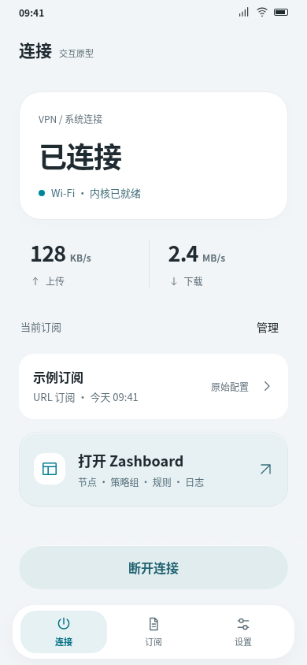
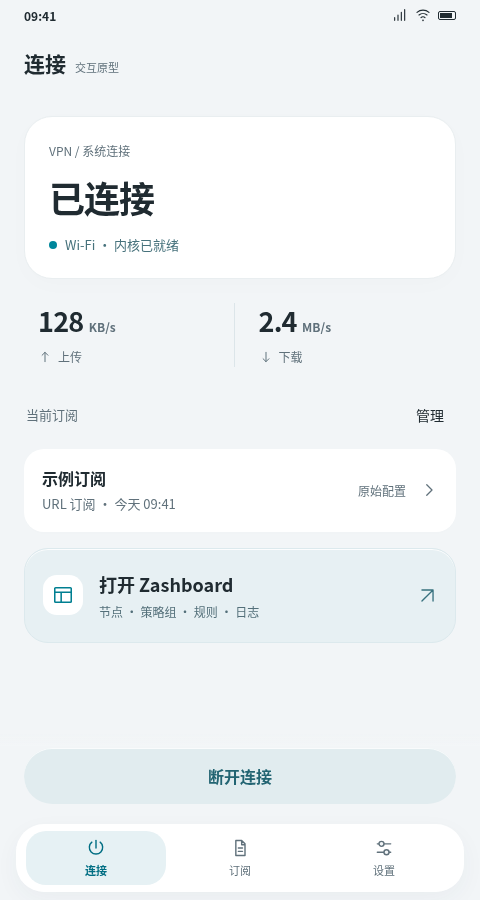
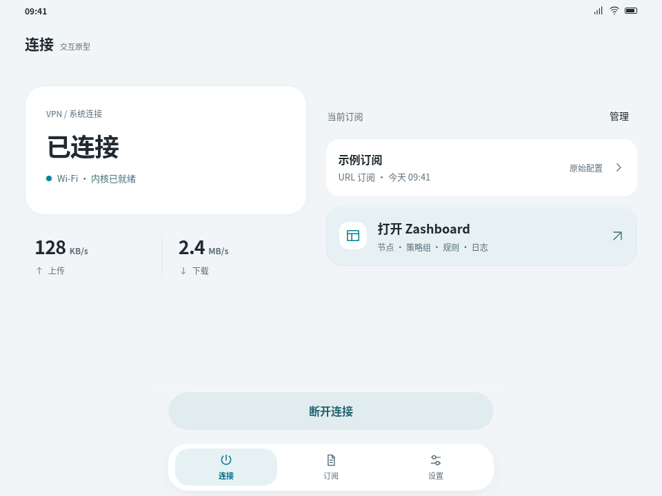
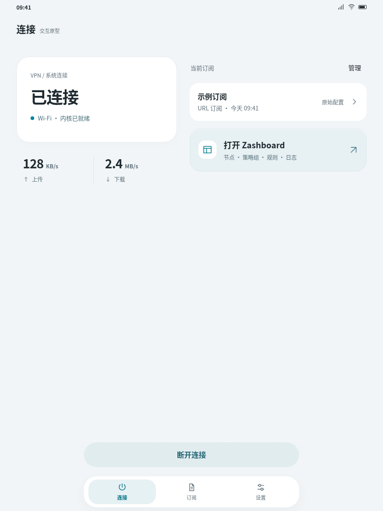
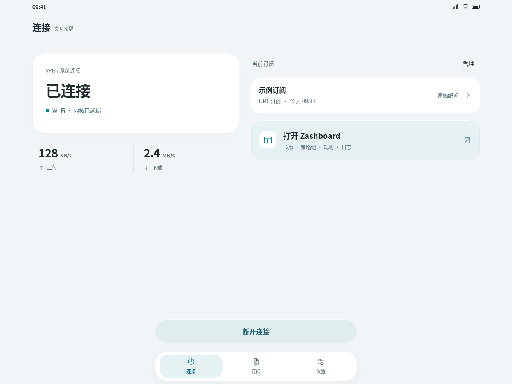
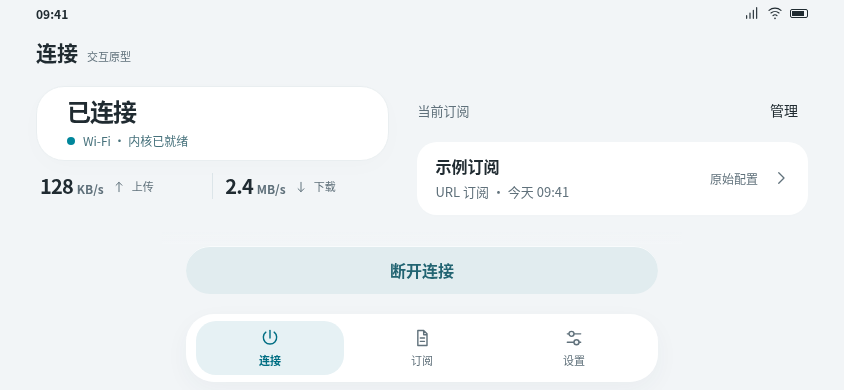

相同窗口，相同任务。
左：保留的硬边版本。右：原生轻盈版。两侧均为实际浏览器渲染，状态与示例值相同。
原版 · Ark minimal
新版 · 原生轻盈
按窗口重排，连接保持连续。
下列尺寸是原型逻辑窗口，用来覆盖比例与断点，不代表指定硬件的屏幕分辨率。窄窗口单列，宽窗口并列，高度受限时保持固定导航与操作、正文滚动。






左：保留的硬边版本。右：原生轻盈版。两侧均为实际浏览器渲染，状态与示例值相同。
下列尺寸是原型逻辑窗口，用来覆盖比例与断点，不代表指定硬件的屏幕分辨率。窄窗口单列，宽窗口并列，高度受限时保持固定导航与操作、正文滚动。





